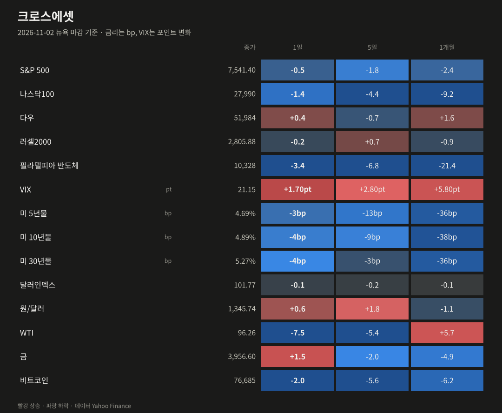
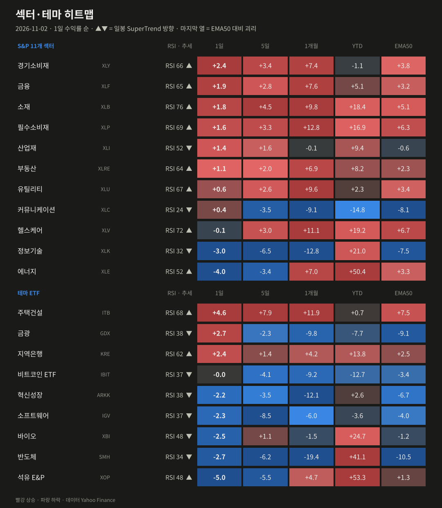
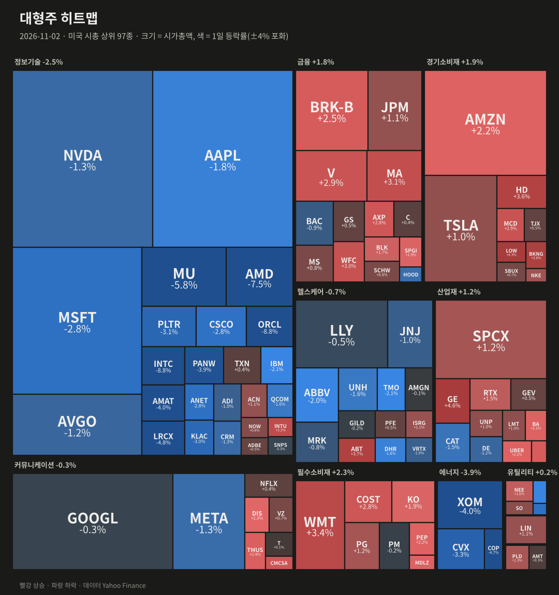
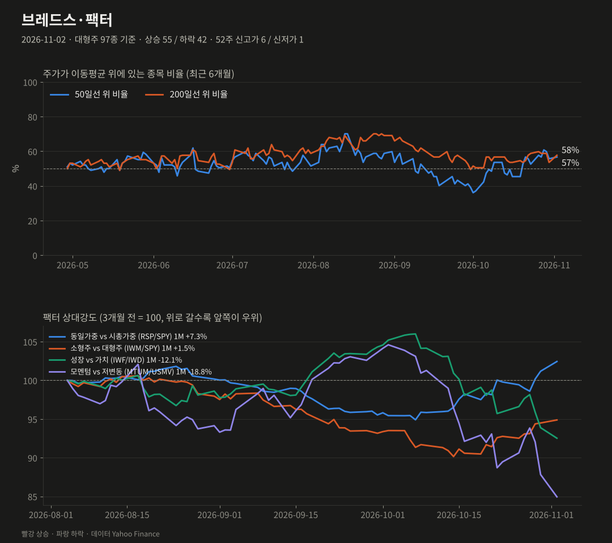
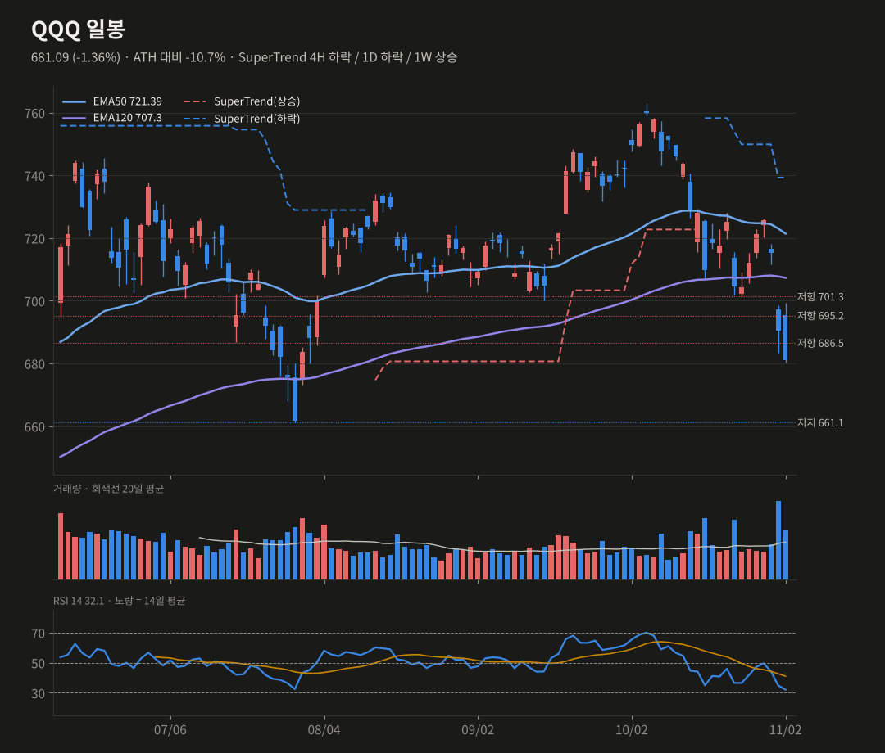
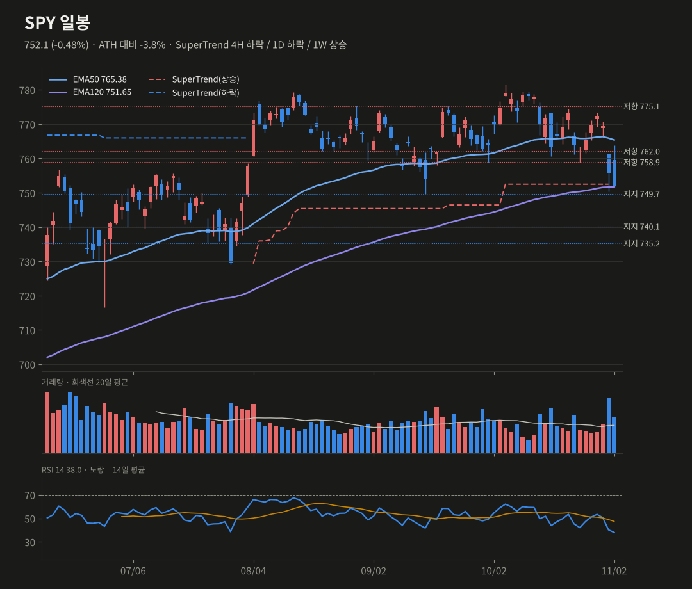
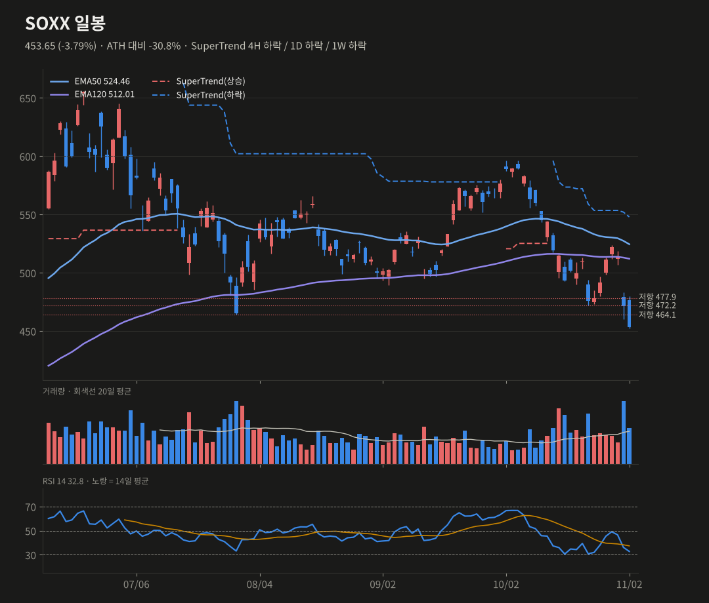
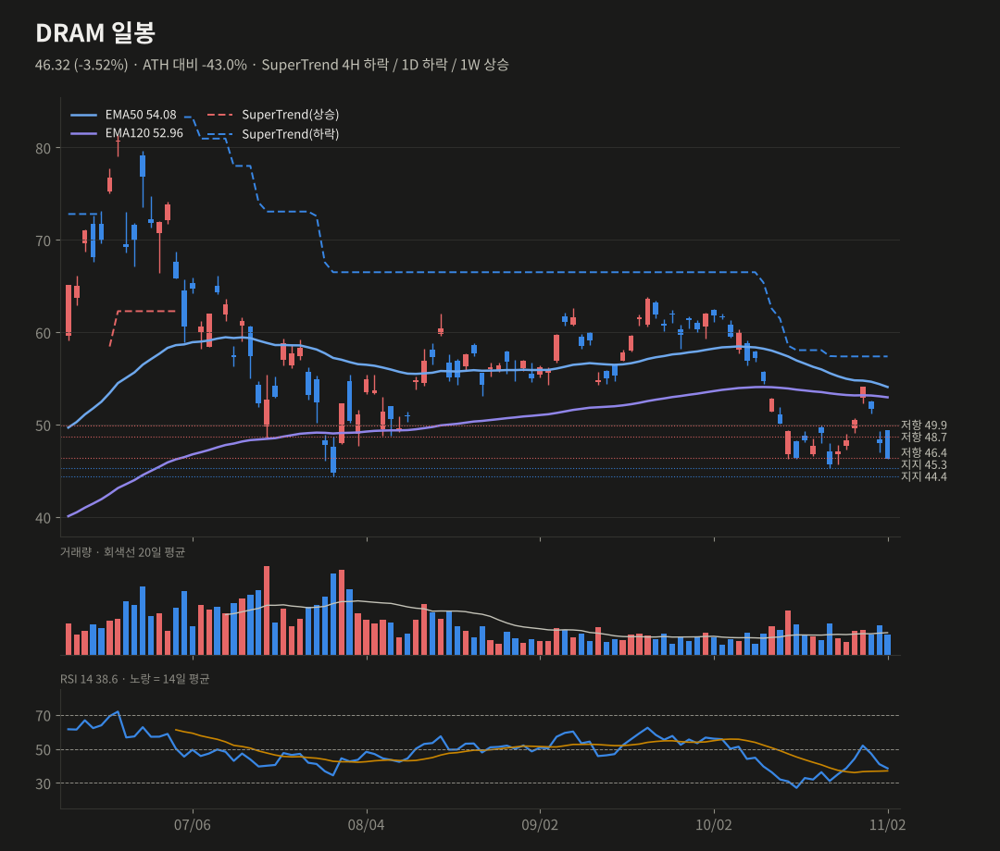

미증시 마감 브리핑
11/2(월) 뉴욕 마감 기준 · 생성 2026-11-03 07:41 KST
유가 −7.6%로 경기소비·금융은 올랐지만, 반도체가 다시 −3.4% 빠져 나스닥은 3일째 하락했어요. SPY 일봉 추세가 하락으로 돌아섰어요.
S&P 5007,541.40-0.51%
나스닥10027,990-1.39%
다우51,984+0.41%
러셀20002,805.88-0.21%
반도체(SOX)10,328-3.37%
VIX21.15+1.70pt
미 10년물4.89%-3.50bp
원/달러1,345.74+0.58%
요약
- 유가 −7.6%(평화안 보도)로 소비재·금융은 강했지만, 반도체가 −3.4% 다시 밀렸어요.
- 오라클 200억 달러 조달 계획과 앤트로픽 S-1 공개로 AI 투자 회수 우려가 계속되고 있어요.
- 애플은 실적을 넘겼지만 시간외 −4.1%예요. 오늘(11/3)은 중간선거예요.
- SPY 일봉 추세가 하락 전환했어요. QQQ는 661, SOXX는 450, DRAM은 45.3이 지지선이에요.
종합 판단
유가 급락과 동일가중 강세는 경기민감·내수주에 우호적이에요. 반면 AI 인프라 쪽은 자금 조달(오라클), 비용(앤트로픽 약정), 실적 둔화(애플) 뉴스가 겹쳐 매도가 이어지고 있어요. 나스닥 계열은 과매도에 들어와 기술적 반등 여지가 있어요. 하지만 SPY 일봉 추세 전환, SOXX 주봉 EMA50 이탈로 스윙 확률은 낮췄어요. 중간선거 결과가 단기 변동성의 분기점이에요.
유가 급락과 동일가중 강세는 경기민감·내수주에 우호적이에요. 반면 AI 인프라 쪽은 자금 조달(오라클), 비용(앤트로픽 약정), 실적 둔화(애플) 뉴스가 겹쳐 매도가 이어지고 있어요. 나스닥 계열은 과매도에 들어와 기술적 반등 여지가 있어요. 하지만 SPY 일봉 추세 전환, SOXX 주봉 EMA50 이탈로 스윙 확률은 낮췄어요. 중간선거 결과가 단기 변동성의 분기점이에요.
무엇이 시장을 움직였나
- 유가 급락: 이란·카타르 측의 분쟁 종식안 협의 보도로 WTI가 −7.6% 내려 96.3달러가 됐어요. 에너지(−4.0%)와 석유 E&P(−5.0%)가 약했고, 경기소비재(+2.4%)와 주택건설(+4.6%)이 강했어요.
- 반도체·AI 재약세: INTC −8.8%, AMD −7.5%, MU −5.8%, LRCX −4.8%였어요. 오라클은 주식 100억 달러와 채권 100억 달러 발행 계획으로 −8.8%였어요. 마벨의 루멘텀 인수(1,150억 달러, 전액 주식)도 부담이었어요.
- 앤트로픽 S-1 수정본에서 9개월 매출 332억 달러, 약정 지출 약 8,954억 달러가 공개됐어요. 'AI 인프라 투자 회수' 논쟁이 다시 커졌어요.
- 금리·변동성: 10년물 4.89%(−3.5bp), VIX 21.2(+1.7pt)였어요. 중간선거(11/3)를 앞두고 재정과 국채 발행 경로가 변수예요.
- 바이낸스는 해킹 이후 순유출 47억 달러가 보도됐어요(FBI는 북한 해커 소행으로 지목). 비트코인은 7.7만 달러 근처예요.
장 마감 후·시간외
- 애플은 4분기 매출 1,144.8억 달러(예상 1,134.7억 달러), EPS 2.10달러(예상 2.00달러)로 예상을 넘었어요. 하지만 성장 둔화로 시간외 −4.1%(338.3 → 324.3)예요.
- 시간외 기준 QQQ 680.2, SPY 751.7로 보합이고, SOXX와 DRAM도 보합이에요.

| 자산 | 종가 | 1일 | 5일 | 1개월 |
|---|---|---|---|---|
| S&P 500 | 7541.4 | -0.51% | -1.76% | -2.35% |
| 나스닥100 | 27989.82 | -1.39% | -4.38% | -9.15% |
| 다우 | 51983.98 | +0.41% | -0.72% | +1.58% |
| 러셀2000 | 2805.88 | -0.21% | +0.70% | -0.95% |
| 필라델피아 반도체 | 10328.33 | -3.37% | -6.81% | -21.38% |
| VIX | 21.15 | +1.70pt | +2.80pt | +5.80pt |
| 미 5년물 | 4.693 | -2.8bp | -13.1bp | -36.2bp |
| 미 10년물 | 4.894 | -3.5bp | -9.2bp | -38.3bp |
| 미 30년물 | 5.269 | -4.0bp | -3.2bp | -36.1bp |
| 달러인덱스 | 101.77 | -0.11% | -0.18% | -0.15% |
| 원/달러 | 1345.74 | +0.58% | +1.81% | -1.09% |
| WTI | 96.26 | -7.55% | -5.40% | +5.65% |
| 금 | 3956.6 | +1.48% | -2.03% | -4.94% |
| 비트코인 | 76685.47 | -2.00% | -5.64% | -6.21% |

| 섹터·테마 | 1일 | 5일 | 1개월 | YTD | RSI | 일봉 추세 |
|---|---|---|---|---|---|---|
| 주택건설 ITB | +4.56% | +7.90% | +11.92% | +0.7% | 68 | 상승 |
| 금광 GDX | +2.67% | -2.31% | -9.83% | -7.7% | 38 | 하락 |
| 경기소비재 XLY | +2.41% | +3.41% | +7.38% | -1.1% | 66 | 상승 |
| 지역은행 KRE | +2.39% | +1.37% | +4.17% | +13.8% | 62 | 상승 |
| 금융 XLF | +1.86% | +2.75% | +7.61% | +5.1% | 65 | 상승 |
| 소재 XLB | +1.76% | +4.46% | +9.84% | +18.4% | 76 | 상승 |
| 필수소비재 XLP | +1.58% | +3.26% | +12.79% | +16.9% | 69 | 상승 |
| 산업재 XLI | +1.38% | +1.65% | -0.14% | +9.4% | 52 | 하락 |
| 부동산 XLRE | +1.09% | +1.96% | +6.93% | +8.2% | 64 | 상승 |
| 유틸리티 XLU | +0.55% | +2.63% | +9.64% | +2.3% | 67 | 상승 |
| 커뮤니케이션 XLC | +0.36% | -3.46% | -9.12% | -14.8% | 24 | 하락 |
| 비트코인 ETF IBIT | -0.02% | -4.14% | -9.18% | -12.7% | 37 | 하락 |
| 헬스케어 XLV | -0.15% | +2.97% | +11.08% | +19.2% | 72 | 상승 |
| 혁신성장 ARKK | -2.22% | -3.52% | -12.10% | +2.6% | 38 | 하락 |
| 소프트웨어 IGV | -2.29% | -8.52% | -6.02% | -3.6% | 37 | 하락 |
| 바이오 XBI | -2.52% | +1.05% | -1.54% | +24.7% | 48 | 하락 |
| 반도체 SMH | -2.71% | -6.15% | -19.39% | +41.1% | 34 | 하락 |
| 정보기술 XLK | -2.95% | -6.49% | -12.81% | +21.0% | 32 | 하락 |
| 에너지 XLE | -3.96% | -3.43% | +7.05% | +50.4% | 52 | 상승 |
| 석유 E&P XOP | -5.01% | -5.52% | +4.67% | +53.3% | 48 | 상승 |

| 상승 상위 | 1일 | 거래량(20일 대비) | 하락 상위 | 1일 | 거래량 |
|---|---|---|---|---|---|
| GE | +4.63% | x0.92 | INTC | -8.80% | x1.96 |
| LOW | +4.34% | x1.17 | ORCL | -8.76% | x1.84 |
| BKNG | +3.79% | x1.43 | AMD | -7.52% | x1.55 |
| ABT | +3.73% | x0.89 | MU | -5.78% | x1.12 |
| HD | +3.63% | x1.01 | LRCX | -4.83% | x1.06 |
| WMT | +3.38% | x1.25 | COP | -4.67% | x1.54 |

대형주 97종: 상승 55 / 하락 42 · 50일선 위 56.7% (전일 55.7%, 5일 전 57.7%) · 200일선 위 57.7% · 52주 신고가 6 / 신저가 1
오른 종목 55, 내린 종목 42로 폭은 양호했어요. 동일가중(RSP +0.76%)이 시총가중(SPY −0.48%)을 1.25%p 앞섰어요. 1개월 누적 격차는 7.3%p로 기술주 이탈 로테이션이 계속되고 있어요.
| 팩터 스프레드 | 1일 | 5일 | 1개월 |
|---|---|---|---|
| 동일가중 vs 시총가중 (RSP/SPY) | +1.25% | +3.02% | +7.33% |
| 소형주 vs 대형주 (IWM/SPY) | +0.41% | +2.55% | +1.47% |
| 성장 vs 가치 (IWF/IWD) | -1.45% | -4.24% | -12.06% |
| 모멘텀 vs 저변동 (MTUM/USMV) | -3.28% | -6.27% | -18.80% |
기술적 분석 · 확률
TradingView 설정과 맞춘 지표(EMA50·EMA120, SuperTrend ATR20×4, RSI14, MACD 12/26/9). 확률은 차트 기반 추정치예요.
QQQ 681.09 -1.36%
SuperTrend 4H 하락 / 1D 하락 / 1W 상승 · RSI 32.08
단기 반등 45% · 스윙 상승 35%
686.5 지지를 잃고 681.1로 마감했어요. 4H RSI 28.1로 과매도에 들어가 단기 반등 여지는 유지돼요. 다만 일봉·주봉 히스토그램이 모두 확대 중이라 스윙은 약세 유지예요.
상방 686.5 회복 → 695.3, 701.3
하방 661.1 이탈 → 636.8, 629.2
SuperTrend 4H 하락 / 1D 하락 / 1W 상승 · RSI 32.08
단기 반등 45% · 스윙 상승 35%
686.5 지지를 잃고 681.1로 마감했어요. 4H RSI 28.1로 과매도에 들어가 단기 반등 여지는 유지돼요. 다만 일봉·주봉 히스토그램이 모두 확대 중이라 스윙은 약세 유지예요.
상방 686.5 회복 → 695.3, 701.3
하방 661.1 이탈 → 636.8, 629.2
SPY 752.1 -0.48%
SuperTrend 4H 하락 / 1D 하락 / 1W 상승 · RSI 37.98
단기 반등 45% · 스윙 상승 40% (-5)
일봉 SuperTrend가 하락(782.5)으로 전환했어요(레짐 변화). 대신 EMA120(751.7)과 지지 749.7에서 종가를 지켰어요. 동일가중 강세가 지수 하단을 받치고 있어요.
상방 758.9 회복 → 765.4(EMA50)
하방 749.7 이탈 → 740.2, 729.7
SuperTrend 4H 하락 / 1D 하락 / 1W 상승 · RSI 37.98
단기 반등 45% · 스윙 상승 40% (-5)
일봉 SuperTrend가 하락(782.5)으로 전환했어요(레짐 변화). 대신 EMA120(751.7)과 지지 749.7에서 종가를 지켰어요. 동일가중 강세가 지수 하단을 받치고 있어요.
상방 758.9 회복 → 765.4(EMA50)
하방 749.7 이탈 → 740.2, 729.7
SOXX 453.65 -3.79%
SuperTrend 4H 하락 / 1D 하락 / 1W 하락 · RSI 32.76
단기 반등 40% · 스윙 상승 30% (-5)
주봉 EMA50(456.8)도 아래로 내려갔어요(주중 잠정). 4H RSI 31.0, 일봉 32.8로 과매도 근처지만 일봉·주봉 SuperTrend가 모두 하락이고, ATH 대비 −30.8%예요.
상방 464.1 회복 → 472.2, 489.2
하방 450 이탈 → 주봉 EMA50 이탈 확정
SuperTrend 4H 하락 / 1D 하락 / 1W 하락 · RSI 32.76
단기 반등 40% · 스윙 상승 30% (-5)
주봉 EMA50(456.8)도 아래로 내려갔어요(주중 잠정). 4H RSI 31.0, 일봉 32.8로 과매도 근처지만 일봉·주봉 SuperTrend가 모두 하락이고, ATH 대비 −30.8%예요.
상방 464.1 회복 → 472.2, 489.2
하방 450 이탈 → 주봉 EMA50 이탈 확정
DRAM 46.32 -3.52%
SuperTrend 4H 하락 / 1D 하락 / 1W 상승 · RSI 38.56
단기 반등 40% (-5) · 스윙 상승 35% (-5)
4H SuperTrend가 하락(53.7)으로 전환했고 4H MACD는 데드크로스예요. 주봉 EMA50(46.9)도 아래예요(주중 잠정). 상장 7개월이라 주봉 지표 이력이 짧아 일봉 위주로 판단해요.
상방 48.7 회복 → 49.9, 52.0(4H EMA50)
하방 45.3 이탈 → 44.4
SuperTrend 4H 하락 / 1D 하락 / 1W 상승 · RSI 38.56
단기 반등 40% (-5) · 스윙 상승 35% (-5)
4H SuperTrend가 하락(53.7)으로 전환했고 4H MACD는 데드크로스예요. 주봉 EMA50(46.9)도 아래예요(주중 잠정). 상장 7개월이라 주봉 지표 이력이 짧아 일봉 위주로 판단해요.
상방 48.7 회복 → 49.9, 52.0(4H EMA50)
하방 45.3 이탈 → 44.4




일정
- 11/3 미국 중간선거(결과는 11/4 아침 반영)
- 애플 시간외 −4% 반영 여부
- 12월 FOMC 인상 여부
출처
- Stock Market Today (Nov. 2, 2026): Apple falls after posting slower earnings growth; S&P 500 falls ahead of U.S. midterms (TheStreet)
- Stock Market Midday, Nov. 2: Stocks Rally as Oil Prices Tumble on Diplomatic Hopes (Motley Fool)
- Apple reports Q4 2026 earnings: $114.5 billion in revenue, up 12% (9to5Mac)
데이터 Yahoo Finance·Nasdaq. 색은 한국식(빨강 상승·파랑 하락). 투자 판단의 참고 자료예요. 지난 브리핑